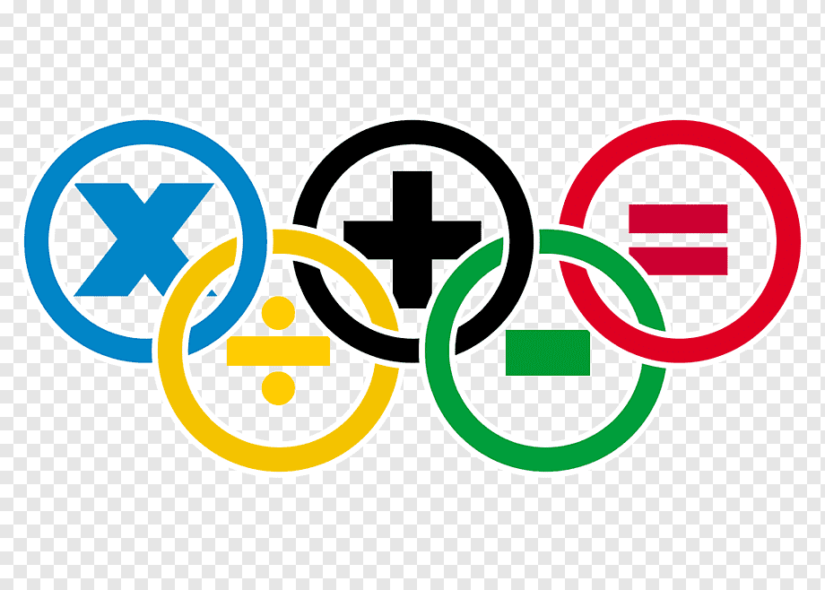

Home
Gallery
Writer
Formula
Contact us
MY LIBRARY ABOUT SOME FAMOUS MATHEMATICIANS
Mathematics is a methodical application of matter.It is so said because the subject makes a man mathodical or systematic.Mathematics makes our life orderly and prevents chaos.Certain qualities that are nurtured by mathemtics are power of reasoning,creativity,abstract or spatial thinking,critical thinking,problem-solving ability and even effective communication skills. Mathematics is the cradle of all creations,without which the world cannot move an inch.Be it a cook or a farmer,a carpenter or a mechanic,a shopkeeper or a doctor,an engineer or a scientist,a musician or a magician,everyone needs mathematics in their day-to-day life.Even insects use mathematics in their everyday life for existence.
"MATHEMATICS GIVES US HOPE THAT EVERY PROBLEM HAS A SOLUTION"